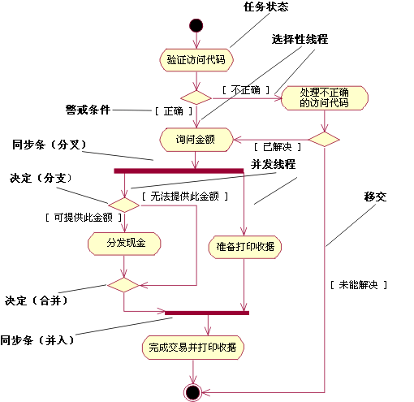

|
用例的事件流描述为了向参与者提供价值，系统需要完成的工作。它由一系列任务组成，这些任务一起为参与者产生某些结果。事件流由基本流以及一个或若干备选流组成。
使用活动图有助于以图形化的方式描述用例的事件流。这样的图显示：
-
活动状态，代表事件流中的任务或步骤的执行情况。
-
转移，显示活动状态的先后顺序。此类转移有时称为完全转移，因为它与转移不同：它不要求显式触发事件，它由活动状态表示的任务完成来触发。
-
决策，为其定义了一组警戒条件。这些警戒条件控制一旦任务完成后所遵循的（一组备选转移中的）某一转移。决策和警戒条件使您能够在用例的事件流中显示
可选线程。
-
同步条，可以使用它们显示并行子流。同步条使您能够在用例的事件流中显示并发线程。

自动柜员机（ATM）的用例模型中的用例“回撤资金”的简化活动图。
活动图是状态表图的特殊情况，其所有或大部分状态都是活动状态，其中所有或大部分的转移由源状态中的操作完成而触发。
|